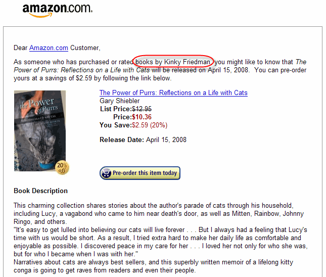

Olinda is a
prototype digital radio that has your social network built in, showing
you the stations your friends are listening to. It’s customisable with
modular hardware, and aims to provoke discussion on the future and
design of radios for the home.
Saturday May 03, 2008
Wednesday Apr 30, 2008
Here's an unusual recommendation from MyStrands,
but in a good way, not a bad way. While I was listening to some Aphex
Twin I checked the MyStrands application to see what they recommended.
MyStrands evidently didn't have enough data to give a good
recommendation, and so they told me that - they didn't blindly give me a
bad recommendation, they recommended something popular, but they also
told me that they were punting on a specific recommendation.
One
Llama is a music recommender that uses "acoustic analysis, cultural
analysis and collaborative filtering tools for music navigation,
discovery and search. On their website they say One Llama uses a
combination of Collaborative Filtering and Audio Similarity modeling to
generate recommendations. Our model harvests cultural references and
social networking data about each track, and listens to the audio using
an advanced "virtual ear." The result is a stronger combined logic for
all our recommendations. The One Llama method has the advantage of being
able to give intelligent recommendations for new audio tracks
immediately while becoming increasingly smarter as additional
information is collected about the tracks from playlists, downloads,
user feedback, etc.
So with all that advanced mojo, one would expect some pretty good recommendations. Here's a recommendation based on the seed song 'Hey Jude' (I chose the Elvis version because they didn't seem to have the Beatles version in their catalog).

There's no doubt that these songs are "like 'Hey Jude'", but somehow the recommendation lacks subtlety and novelty of a real recommendation. Clearly the songs are not acoustically similar (Arthur Fielder vs. Tiny Tim?), and I can't imagine any set of users that would be listening to this set of song, so this is not being driven by a collaborative filtering algorithm. It seems that, at least for this recommendation, the primary driving force is metadata similarity. It is almost as if they just grabbed the Musicbrainz track data, tossed it all into a text similarity engine and turned the crank to get these similarities.
Zac points out another case where One Llama seems to be relying mostly
on metadata. Here's a playlist that One LLama generates for songs
similar to "Let Go" by Frou Frou. The set seems mostly reasonable from
an acoustic point of view - the playlist could have been constructed by
an expert - and in fact it was. The songs (with one exception) can all
be found on the Garden State soundtrack.

This is probably what one could expect from a collaborative filtering system. Lots of music listeners have bought the soundtrack. Any good CF algorithm will notice this and tie the items together. However, I don't think that is what is going on here. Looking at the One LLama playlist, there is one song that is not on the Garden State album. One Llama has added The Postal Service's 'Such Great Heights' to the playlist, while the Garden State has the cover of 'Such Great Heights' by Iron & Wine - although this is a cover, they sound very different; one is electronic-noise-pop, while the other is strictly acoustic. I suspect that, as with the Hey Jude example, One Llama is relying mostly on metadata similarity to determine similarity
Here's the track list for the Garden State:

Using metadata to generate track similarity is not inherently bad. It makes sense to use what works best. A young recommender company like One Llama doesn't have the deep user data necessary to generate good CF recommendations. Creating recommendations based on automatic acoustic analysis is really hard, acoustic-based recommendations are frequently prone to making mistakes that no human would make. I suspect that One Llama has adjusted the dials on their recommender to give more weight to the metadata until they get more user data and their automated analysis is up to par.
Tuesday Apr 29, 2008


Last.fm has a similar artist feature. When you are looking at the page for an artist they will show you artists that are similar based upon the wisdom of the crowds. Last.fm can tell you for instance, that people who listen to Emerson, Lake and Palmer also listen to Yes.
If you go the Hillary Rodham Clinton page at Last.fm and take a look at her 'similar artists' you'll find a motley crew that includes Joseph Stalin and Adolf Hitler. Perhaps not the types of world leaders that Hillary would want to be associated with.
It is even worse if you go to Joseph Stalin's page, where you'll find similar artists such as Michael Savage, Ann Coulter and Rush Limbaugh. Now this was clearly engineered as a prank. Someone (or a group of someones), must have created a playlist with Hillary, Adolf, Coulter, Limbaugh and Stalin and just played them over and over again, feeding their play data into the Last.fm audioscrobbler until Last.fm noticed the correlation and declared that they were similar artists. This is one of the first instances of I've seen where a music recommender has been noticeably manipulated to produce a dishonest recommendation. It certainly demonstrates how these types of systems can be vulnerable to attack.
Luckily, there are some smart people working to protect us from this hacking. Bamshad Mobasher has some good papers on the topic that are worth reading.
As more people seek out long tail content, recommenders will become increasingly important, which means that the folks who are spamming and splogging and seo-ing, will be trying to hack our recommenders to get their remedies for hair loss treatment at the top of the list. (Thanks Elias)
Monday Apr 28, 2008
I was looking at the Keith Fullerton Whitman Google Music page
when I noticed that there was a Google Sponsored Link on the side for
Pandora. KFW is not exactly a mainstream artist, so it seemed odd that
Pandora would be purchasing Sponsored Links for his page. Well, I
clicked on the link and much to my surprise I was brought to a Pandora
Radio station for Goldenboy. Now, lets be clear, there's absolutely no
similarity between Goldenboy and KFW. Looking at the google page, I
can't figure out the reason behind the Pandora ad placement. Something
went awry somewhere - or perhaps there's some connection between KFW and
Goldenboy that I don't know about. Perhaps Pandora or the Echonest can
answer the question.


I hope people don't think I am picking on Amazon. Amazon clearly has
one of the best recommenders in the world. The last time I went to
Amazon, I intended to buy 1 book, I ended up with 5 all because of
their recommender. 99% of the recommendations from the Amazon
recommender are spot on - but there's a small number of recommendations
that are surprising, funny or just plain crazy. Now this doesn't always
mean that these are bad recommendations. For example, here's one that
was sent to me by Anita Lillie. She says:
I noticed you are posting freakomendations on your blog, and it reminded me of how I was looking for flowers for a mother-in-law-type person for Christmas last year, and I got a recommendation for the video game Halo. I went back today to try to find the same recommendation, but I couldn't find it. Instead, I see a "recommendation" ("other customers who bought... also bought...") for the movie "Hot Fuzz" fairly frequently within the "flowering indoor plants" product category. Anyway, it was particularly funny with the Halo, and I'm guessing it's all those 20-something guys who go online to order something for their moms.

As Anita suggests, the demographic of Amazon flower purchases probably skews to 20-somthing guys getting something for their moms, so throwing in Halo or Hot Fuzz, may not be a bad way for Amazon to make an extra sale or two.
Zac sends along this freakomendation:
I don't know if you're a Kinky Friedman fan, but his books are
detective stories -- kind of a foul-mouthed cross between Phillip
Marlowe, Hunter Thompson and Groucho Marx. He happens to have a cat.

Steve points to a freakomendation thread on John Scalzi's blog: "Today Amazon suggested The Last Colony to me for purchase. Yeah, you know, I’ve read that. But it’s nice to know Amazon’s algorithm thinks I might like my own stuff." One interesting comment: Amazon’s algorithm also has an annoying (well, it was funny the first time, since it happened on April 1st. But then it kept on happening, and I realized they were serious) habit of treating writer’s names, without bothering to check if it’s the same writer or not. I bought a few of Sharon Lee’s and Steve Miller’s Liaden Universe books through Amazon. So they started to give me recommendation for other books by Steve Miller. Which would have been fine, except this new Steve Miller is a completely different Steve Miller and Amazon apparently thinks I would really like illustration advice books.
This is what happened with yesterday's Steve Martin freakomendation, where Amazon recommended a book by the wrong Steve Martin. LibraryThing, another book recommender, at least understands that there are two Steve Martin's that write books, but they still can't tell them apart. At the LibraryThing author page for Steve Martin there is this notice: Steve Martin is actually two authors, Steve Martin the comedian and author of Cruel Shoes, Kindly Lent By Their Owner: The Private Collection of Steve Martin, Shopgirl, Pure Drivel, WASP, The Pleasure of My Company, and Born Standing Up; and Steve Martin the author of Britain and the Slave Trade. In the future LibraryThing will be able to split authors with identical names. At present, it cannot.
This makes be appreciate MusicBrainz so much more. MusicBrainz knows all about the various ambiguous artist names and can tell them apart. I guess there's no such thing as BookBrainz yet.
Sunday Apr 27, 2008


{kind=link}
Some people are bird watchers, some collect cars. I like to collect unusual recommendations. I'm calling these 'Freakomendations'. There's almost always a story behind the recommendation - but sometimes it is hard to track them down.
This recommendation, Amazon suggests that since Aaron Hurly has purchased books by Steve Martin, he may be interested in the (no doubt) hilarious Public Services Inspection in the Uk: Research Highlights in Social Work
It looks like Amazon decided that the Steve Martin who edited this book was that same wild and crazy guy.
Via aaronhurley.org
Friday Apr 25, 2008
A classic problem in traditional collaborative filtering
recommendation is the 'cold start' problem. It is hard to generate
recommendations for new items because there isn't enough taste data
about the new items to make reliable correlations with other items.
That's where content analysis comes in. The cold start problem can be
alleviated by basing recommendations on similarity of content as well as
the wisdom of the crowds. New items can be analyzed and enrolled into a
recommender, making these items available and recommendable.
However, using content-based techniques doesn't guarantee the elimination of the cold-start problem. Pandora, everyone's favorite Internet Radio, uses content-analysis to drive their customized radio. However, since Pandora performs all of their analysis by hand, there may be some lag before your favorite artist makes it into the Pandora catalog.
There's another content-based recommender - BookLamp.org. The BookLamp F.A.Q describe BookLamp as a
"book recommendation system that uses the full text of a book to match it to other books based on scene-by-scene measurements of elements such as pacing, density, action, dialog, description, perspective, and genre, among others. In other words, BookLamp.org is a Pandora.com for books, based on an author's writing style. If you match against multiple books, the self-learning system adjusts your formulas to make the match specific to your tastes. As the system moves out of beta, it will also incorporate human feedback into the recommendation systems, blending the strengths of social networks with the strengths of computer analysis. Ultimately, we want users to be able to create and share their own formulas, creating a community of book lovers that have tools to discover and share books in a way never before possible. Because the system matches books through objective data from the text itself instead of relying solely on social networks to generate recommendations, the recommendations are impervious to outside influences such as advertising or author marketing. It also allows you to match to a far greater detail than alternative systems. With BookLamp, you can request a book similar to Stephen King's The Stand, but half the length, first person, literary mainstream fiction, with slightly more dialog, less description, and a rising action level across the first 10 scenes. If that's what you're looking for".
It is a neat idea, and sounds very similar to the types of things we are doing with Search Inside the Music and Project Aura. Using content analysis gives you better ways to help people discover new items. However, BookLamp has its own cold start problem. Again, from the BookLamp FAQ:
Does BookLamp Work? Can I use it right now to find a book to read?The simple answer to this question is that while BookLamp works, it doesn't have enough books in the database to work well. While the technology behind the system is capable of finding you books to read right now, BookLamp will remain a technology demonstration until we have a large enough database of books to give the system enough data to make realistic recommendations. Without more books, not only will most users have a hard time finding a book to match against, but the system will have a limited number of books that are capable of being matches. In other words, if we don't have a book in the database that matches, we won't be able to recommend a book for you. Additionally, with so few books in the database, we're not able to match against all the metrics that we would like. In order to be the most effective, BookLamp needs to match against 7 to 8 metrics; with less than 300 books in the database, we're having to make recommendations after matching against only 3 or 4 metrics. To get any matches at all, we've had to turn down the sensitivity of the measures (see the next question) a bit already.We estimate that it will take a database of at least 10,000 books to make BookLamp a usable system. The more, the better.
So BookLamp has a bit of a problem, with only 300 books in its database, it is not going to be the best book recommender. And unlike music, it is not so easy to enroll a new book - scanners and page turners are involved. So BookLamp is trying to figure out its next step. If I were them, I'd build a recommender for the Gutenberg project with its over 25,000 titles. Of course there are no NY Times best sellers in the bunch, but it would be a great way to fine tune the content-analysis while providing a service to a worthy project.
There's a nifty contrarian minds article
about my colleague Steve. There's a nice bit in the article about the
genesis of Project Aura - how we took the ideas from Search Inside the
Music combined with the tech from the advanced search group to make
something new. It's a good read.
Thursday Apr 24, 2008
As a way to demonstrate some of the capabilities of Project Aura,
we've created Aardvark, a blog recommender. Of course, the world
probably doesn't need another blog recommender - but by building a blog
recommender we get some experience dealing with a really large dataset
that has lots of interesting characteristics. For one thing, we are
using content analysis, classification and autotagging to help identify
relevant content. We use incoming links and attention to determine how
much authority a particular entry has on a topic. Since we use content
as well as social data to identify relevant content, we are less
susceptible to the cold start problem, and we are able to create
recommendations based upon topics not just the usual "people who read X
also read Y".
We didn't want to build yet another blog reader, everyone already has their favorite way to read blogs - and we didn't want to spend a lot of time crafting an attractive web interface like the Findory. Instead, we wanted to focus primarily on the back-end, on the quality of the recommendations. So instead of spending our time writing a fancy blog reader that you wouldn't want to use anyway, we just made it work with our favorite blog reader: Google Reader.
{kind=link}
Here's how it works. Read your blogs in Google Reader like you always do. When you read an item that is particularly interesting add a star (using the Google Reader 'add star' link). Over time you should build up a pretty good collection of items that represents your interest. For Aardvark to generate recommendations for you, we need to learn what your preferences are. Luckily, the Google Reader allows you to export your starred items as a feed.
In Google Reader, navigate to your settings/tags section, where you can 'view public page' for your starred items. On this page you'll find a link to your starred item feed. Copy that so you can paste it into Aardvark. Here are my starred items.
Now you are ready to get recommendations from Aardvark. First, login to Aardvark (note that this isn't publicly available yet).
You can use your OpenID to register. When you register you paste in the URL to your starred item feed. Now Aardvark can notice the items that you are starring and generate recommendations for you based upon these items.
Once you register, Aardvark will give you a few feeds that you can add to Google Reader. This is where Aardvark will send your recommendations:
After you add the recommendation feed to Google Reader, Aardvark will keep the feed filled with items that you might find interesting:

Well, there you have it, a quick tour of how you can use Aardvark to get blog recommendations. We aren't quite ready to make it available to the general public - but if you think you might be interested, you can at least start to star items in Google Reader, so that when we are ready, you'll be ready.
BTW, Jeff built the web interface and integrated the OpenId support. The site really looks great.
I was going to respond to Mark Cohen's post on the Myth of Music Discovery.
Based on recent survey data showing that the plurality of people
still discovery new music via radio, Marc concludes that music discovery
is passive and that downloaded ad-supported music will be the superior
vehicle for music discovery. I was going to write about how I thought
Marc's conclusions were just a lot of bunk. But luckily David Jennings
(of Net, Blogs and Rock 'n' Roll fame) has written a cogent (and less
insulting) response. So, instead of writing a response - I'm going to
just redirect you to David's: The myth, science and craft of music discovery.

Two weeks from today is the second SanFran MusicTech Summit. The summit is a convergence of musicians, technologists, business and legal folk that are in someway connected with the world of music. The event is organized by Brian Zisk, one of the founders of the Future of Music coalition. This summit is lining up to be even better than the last. Lots of really interesting panelists from companies such as Pandora, Apple, CD Baby, YouTube, SeeqPod, iMeem, Google, Rhapsody, Songza, Gracenote, and Sony, as well as some A-List bloggers including Mike Arringtion (Techcrunch), Pete Crashmore (Mashable), and Om Malick (GigaOm). (See the full speaker list)
I'm lucky enough to be on the agenda to give a short technology demo of Search Inside the Music and Project Aura. I just can't imagine a better-suited audience for this demo - I'm really looking forward to it.
This blog copyright 2010 by plamere